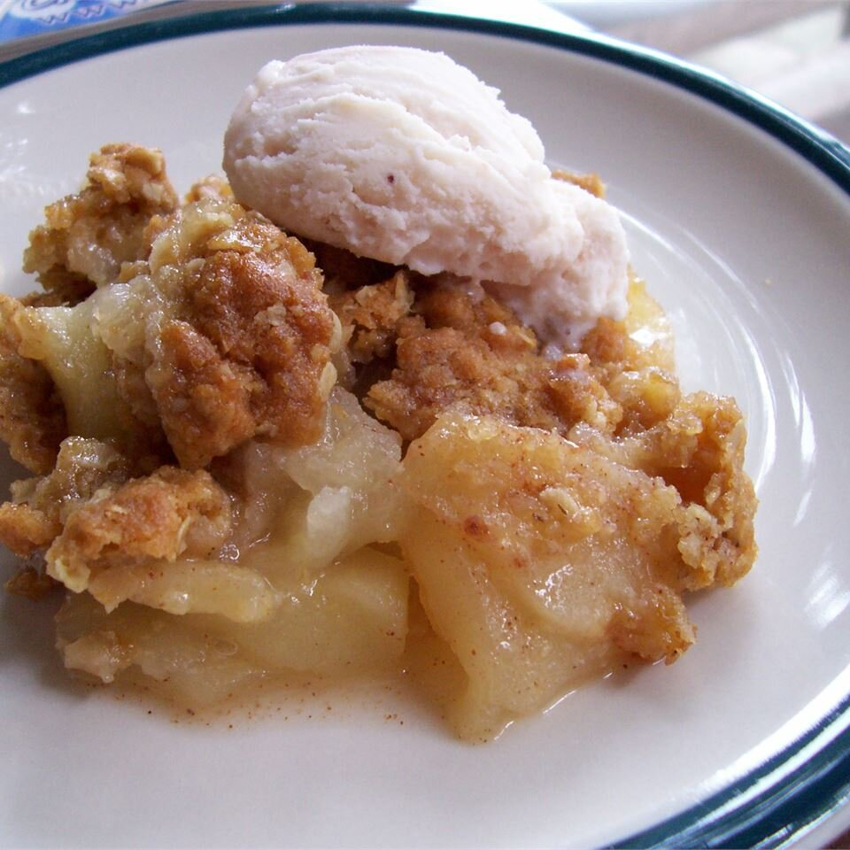

Apple Crisp

Description
A true classic Fall dessert, this easy apple crisp recipe is
reminiscent of generations past. Pop this apple crisp in the oven and
wait for the delicious smell to waft through your house!
Ingredents
- 10 cups peeled, cored, sliced apples
- 1 cup white sugar
- 1 tablepoon ground cinnamon
- 1 tablespoon all purpose flour
- 1/2 water
- 1 cup quick-cook oats
- 1 cup all purpose flour
- 1/4 teaspoon baking powder
- 1/4 cup baking soda
- 1/2 cup butter, melted
Steps
- Preheat oven to 350F
- Place the sliced apples in a 9x13 inch pan. Mix the white sugar,
1 tablespoon flour and ground cinnamon together, and sprinkle over
apples. Pour water evenly over all.
- Combine the oats, 1 cup flour, brown sugar, baking powder, baking
soda and melted butter together. Crumble evenly over the apple
mixture.
- Bake at 350 degrees for about 45 minutes
Return to Main Page